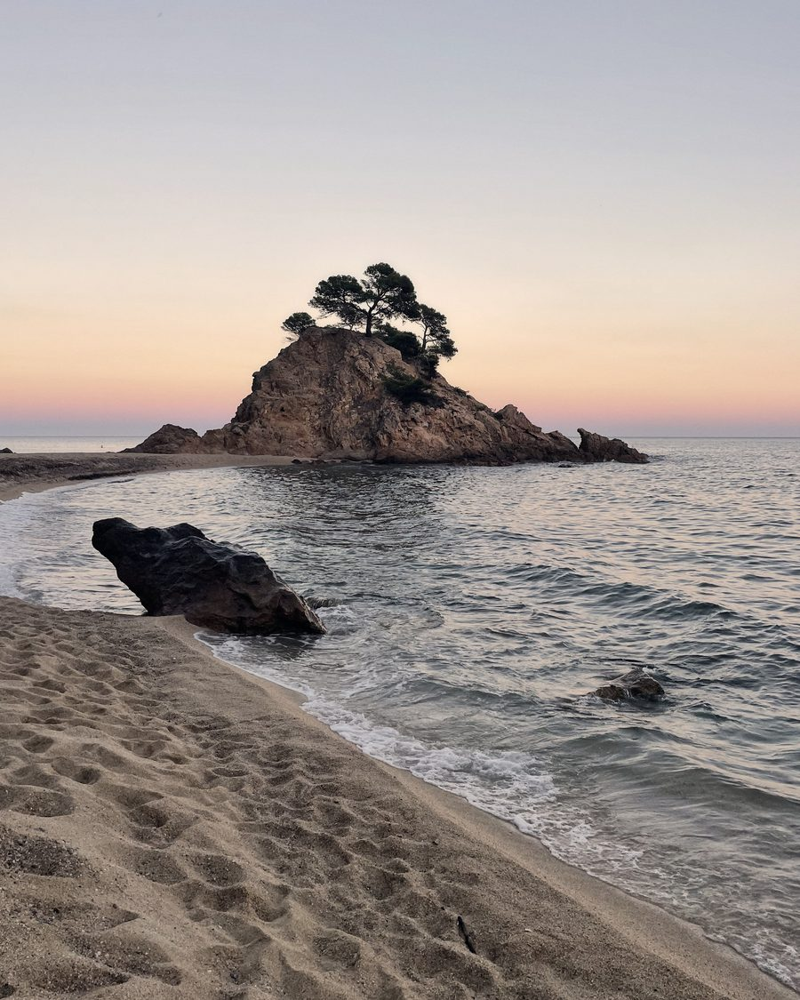

Costa Brava · 41,917 N · 3,163 E
—
Baixa: el dia avança

Col·lecció S1 · Costa Brava
No venem un lloc.
Venem una hora.
La roba que puja de l’aigua a la taula
sense passar per casa.
Sal a la pell, la llum de biaix, i setanta minuts que no tornen.
El que fem
Hi ha una hora, cada dia,
en què el Mediterrani
es torna un altre lloc.
És l’estona en què la platja es buida i el poble s’omple. La sal ja s’ha assecat a la pell, l’aigua encara és calenta i ningú no té pressa. Els primers llums s’encenen abans que facin falta.
Comença quan la llum deixa de caure a plom i s’acaba quan el cel deixa de fer de llum. Dura entre setanta i noranta minuts i canvia cada dia. D’aquesta hora en surt tot: el nom, els colors, la manera de fotografiar i el criteri per triar un teixit. És d’aquí que ve la marca. I d’un lloc concret: la Costa Brava, de Sant Feliu a Begur, que és on comença.
Però la roba no hi viu només. Es posa al matí, es mulla al migdia, puja el camí de ronda a les set i seu a taula a les deu. La marca neix d’una hora; la roba les ha d’aguantar totes —perquè una peça que no aguanta el dia sencer no arriba a l’hora que importa.
Pensada per a una hora.
Feta per a tot el dia.
Les fotografies d’aquesta pàgina són vespres que ja hem viscut. La roba és per als que et queden a tu: qui hi haurà a taula, què s’estarà dient i a quina hora us n’anireu. Nosaltres hi posem el color i la peça; el moment el poses tu.
El manifest sencer · nou línies →
La doble vida
El dia té dues meitats.
La roba ha de ser a totes dues.
S’horabaixa no és una franja horària: és cap on va tot el dia. Per això no fem roba per a l’última hora de llum. Fem roba que hi arribi.
La meitat sòlida
Dura vuit hores i la llum cau a plom. És on la peça es mulla, s’omple de sorra i es queda la sal a dins. No és bonica i no la fotografia ningú, però és la que la posa a prova: aquí una camisa barata ja ha perdut el color.
Escull de les Cigales, Sant Antoni de Calonge · 2 d’agost · 12:02La meitat fràgil
Dura setanta minuts i no torna. La llum es gira, tot es fa llarg, i la mateixa peça que has castigat tot el dia s’ha de poder seure a taula com si res. La fragilitat no és de la roba: és de l’hora.
Escull de les Cigales, Sant Antoni de Calonge · 14 d’agost · 19:49 · −61 minSet capítols
Un horabaixa,
de cap a cap
Set moments d’un mateix vespre, en l’ordre en què passen. Els reconeixeràs: són els teus. Cap no està posat, tots van passar, i la roba que fem existeix per acompanyar-los. Cada imatge porta els minuts que li falten al sol, i el temps és el material amb què treballem.
Continua
Per on vulguis començar
El pacte
Et venem les nou menys quart
d’un vespre de finals de setembre.
La camisa és el que et queda a les mans quan aquell vespre s’ha acabat. Dins de la capsa hi ha la peça i quatre coses més que no has demanat, i que són aquell moment desmuntat en parts.
Llegir el pacte →- 01No farem rebaixes mai. Si en trobes una, et tornem la diferència.
- 02De la XS a la XXL, al mateix preu, des del primer dia.
- 03Te la reparem cinc anys, i el port el paguem nosaltres.
- 04Cap lloc on no hàgim estat. Ho pots comprovar.
- 05El teu número de tirada és real i auditable.
- 06Seixanta dies per canviar d’opinió, sense preguntes.
L’ofici
I abans de tot això,
algú
l’ha de fer
Abans que la camisa existeixi hi ha una taula, un patró de paper i algú decidint on va cada costura.
Una hora i un color no fan una camisa. Entre aquell vespre i la teva mà hi ha set passos —l’esbós, el patró, el teixit, el tint, la costura i la capsa— i cadascun té nom, data i responsable. El patró es prova en tres cossos reals de talles i edats diferents; el teixit passa assajos abans que en comprem cap metre; el color s’aprova contra la fotografia d’aquell minut i no contra una carta. Tots es poden preguntar i tots tenen resposta.
Veure com es fa →El calendari
La primera col·lecció
es confecciona entre
la tardor
i la primavera.
Les formes, els colors i les mides ja estan decidits. El que ve ara és el temps de taller: el teixit, els patrons i les primeres peces fetes amb les mans. L’estiu del 2027 seran a la costa d’on han sortit.
No anirem més de pressa. Una camisa que ha de durar deu estius no es fa en tres mesos, i el primer valor d’aquesta casa és la lentitud.
La carta
L’estiu s’acaba.
L’any que ve neix una marca.
No escrivim cada setmana: escrivim quan hi ha alguna cosa a dir. Un teixit que ha passat les proves, un color mesurat d’un vespre concret, la primera peça sortint del taller. Els que hi són ho sabran primer —i seran els primers a triar talla i color.
On passen les coses
Això s’acaba aquí.
Allà continua
cada tarda.
Aquesta pàgina explica què som i no canviarà gaire. El que canvia cada dia és la llum, i això és a Instagram: la costa a l’hora que li toca, els minuts exactes que li falten al sol, i el que anem trobant pel camí —un teixit, un color mesurat, una tempesta d’agost.
La Carta del 2027 ja està mesurada i la pots veure al catàleg. La del 2028 és en algun d’aquests vespres i encara no sabem en quin: se’n mesuraran tres, d’una fotografia concreta cadascun, amb el seu lloc i el seu minut. Qui ho mira cada dia els veu abans que siguin colors.
Una fotografia al vespre · Cada una amb el seu lloc i el seu minut